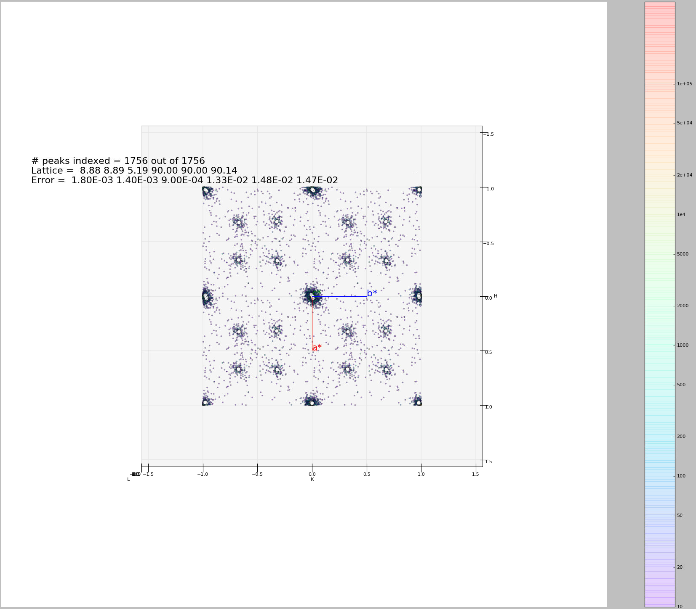

Modulated Structure#
Data reduction for single-crystal neutron diffraction on (3+d) dimension modulated structure with Mantid#
Modulated Structures cannot be described by only three hkl indices, so additional dimensions must be added to standard reduction of Bragg reflections for these structures. More explanation can be found in Acta Crystallographica Section B About modulated structures.
The general procedure for reducing data collected on a modulated structure should be as follows:
Harvest strong peaks from the data collected and find the basic unit cell and corresponding UB matrix;
Harvest more peaks to include the weaker satellites;
Index all the harvested peaks based on the UB found for the basic unit cell, with fractional Miller indices (h, k, l) allowed;
Collapse all the indexed peaks to lattice range by calculating h-floor(h), k-floor(k), l-floor(l), and visualize all the peaks by making a 3d-plot of all the collapsed peaks. Find the clusters of the collapsed peaks, and calculate the coordinates of the centers of the clusters in HKL space, save them as options for modulation vectors;
It is up to the user to identify the best options for modulation vectors, and the maximum order of satellite peaks for each modulation vector. Up to three modulation vectors are allowed; (This task is can be really complicated to realize with an algorithm due to the countless number of special cases to consider, but should be effortless for a human mind in most cases with necessary knowledge of modulated structures. The rule of thumb is to use least number of modulation vectors to account for most satellite peaks, if not all.)
Use the identified modulation vectors together with the basic unit cell to index all the harvested peaks, both main and satellites, with a reasonable tolerance set by user. One extra index is introduced (m, n, p) for each modulation vector identified;
Recalculate the UB matrix together with the modulation vectors using indexed peaks; (Step 7 and 8 can be iterated several times with smaller tolerances to refine the UB matrix and modulation vectors.)
Predict all the main and satellite peaks that hit the detector with the refined UB matrix and modulation vectors;
Integrate the predicted peaks and save them. Scale the integrated peaks for scattering angles and correct for absorption.
For processing the data from modulated structures, new member ModUB is added to the OrientedLattice class:
In other words, the coordinates of Modulation Vector i (i=1,2,3) in Q space is (\(\text{MV}_{1i}\), \(\text{MV}_{2i}\), \(\text{MV}_{3i}\)). If the structure is not modulated, ModUB=0. Correspondingly, new members ModHKL and errorModHKL are added to UnitCell class.
In this case, (\(\text{dh}_{i}\), \(\text{dk}_{i}\), \(\text{dl}_{i}\)) is the modulation vector i (i=1,2,3) in HKL space. And the relation between ModUB and ModHKL is:
or
ModUB is added to OrientedLattice class and ModHKL and ModVec are added to UnitCell class. Value for ModHKL in UnitCell is set when the function setModUB is used in OrientedLattice. Some of the values can be set from python.
sampleWs = CreateSampleWorkspace()
pws = CreatePeaksWorkspace(InstrumentWorkspace=sampleWs,NumberOfPeaks=1)
peak = pws.getPeak(0)
testVector = V3D(0.9,0,0.2)
peak.setIntMNP(testVector)
print (peak.getIntMNP() == V3D(1,0,0))
A python script is in development for step 4, which provides a visual aid for identifying the satellite peaks. It also find clusters of peaks by binning the number of peaks in the collapsed HKL space into specified sized boxes. The resulting clusters of peaks together with the visual aid should be adequate for the user to identify modulation vectors in step 5. See figure

For step 6, algorithm IndexPeaks is created, parallel to the algorithm IndexPeaks for regular crystal structures. The inputs for this algorithm include the PeaksWorkspace to be indexed, tolerance for main and satellite reflections respectively, up to 3 modulation vectors, maximum order of satellite to index, and a key for whether to include satellites of crossed terms. The algorithm indexes the main reflections the same as IndexPeaks algorithm, but the tolerance used has to be smaller than any modulation vector. For each reflection in the list that is not indexed as a main reflection, multiples of each modulation vector (\(n \times (\delta h,\delta k,\delta l)\), where n ranges from -MaxOrder to +MaxOrder, with 0 excluded) is subtracted from calculated fractional Miller indices. If it results in integer h, k, l indices within the input tolerance for satellites, the peak will be indexed (h,k,l,n,0,0) for the first modulation vector, (h,k,l,0,n,0) for the second modulation vector, and (h,k,l,0,0,n) for the second modulation vector. If cross terms of satellite peaks are allowed in the indexing, combinations of more than one modulation vectors (\(m \times ({\delta h}_{1},{\delta k}_{1},{\delta l}_{1}) + n \times ({\delta h}_{2},{\delta k}_{2},{\delta l}_{2}) + p \times({\delta h}_{3},{\delta k}_{3},{\delta l}_{3})\), with m, n, p within range (-MaxOrder, MaxOrder)) will be used, which would result in satellite peak indexed as (h,k,l,m,n,p). The 6-D Miller Indices of the peaks will be stored as IntHKL and IntMNP in the Peak class. Functions like setIntHKL, setIntMNP, getIntHKL, and getIntMNP can be used to write and read the indices from a peak.
For step 7, algorithm FindUBUsingIndexedPeaks is updated. This algorithm uses the indexed peaks from step 6 (including both main and satellite peaks) to calculate the UB and ModUB. Function, Optimize_6dUB, is is added to IndexingUtils to Optimize_UB. Optimize_6dUB calculates the 6-dimensional matrix that most nearly maps the specified hkl_vectors and mnp_vectors to the specified q_vectors. The calculated UB minimizes the sum squared differences between UB|ModUB*(h,k,l,m,n,p) and the corresponding (qx,qy,qz) for all of the specified hklmnp and Q vectors. The sum of the squares of the residual errors is returned. This method is used to optimize the UB matrix and ModUB matrix once an initial indexing has been found. Other than ModUB and the list of mnp vectors as additional arguments for the function, a const int ModDim is also added to describe the modulation dimension of the indexed peaks list. In the case of modulation dimension equals three:
By having a list of indexed peaks, including both main and satellite peaks, we can have a as many as equations as above. The UB matrix and ModUB matrix, can be solved row by row using least square method.
Note that the above equations still stand even when the modulation dimension is smaller than 3, meaning Modulation Vectors can be partially or all zero. However, solving the UB and ModUB with the above equations would require at least one of each indices (h,k,l,m,n,p) is not zero. Therefore, while calculating the UB and ModUB for data with lower modulation dimension, the column number of the above equations need to be reduced. The errors for the lattice parameters and modulation vectors are calculated in similar fashion as a regular structure.
For step 8, algorithm PredictSatellitePeaks is created. By using equation:
With dh,dk,dl as input for the algorithm, all the satellite peaks that hits the detector within the wavelength range are predicted. This algorithm is created as a way to set the modulation vectors and in case different peak size need to be used for integrating main and satellite peaks. Mean while, PredictPeaks algorithm is modified to have the option to include satellite peaks, by using equation:
Category: Concepts